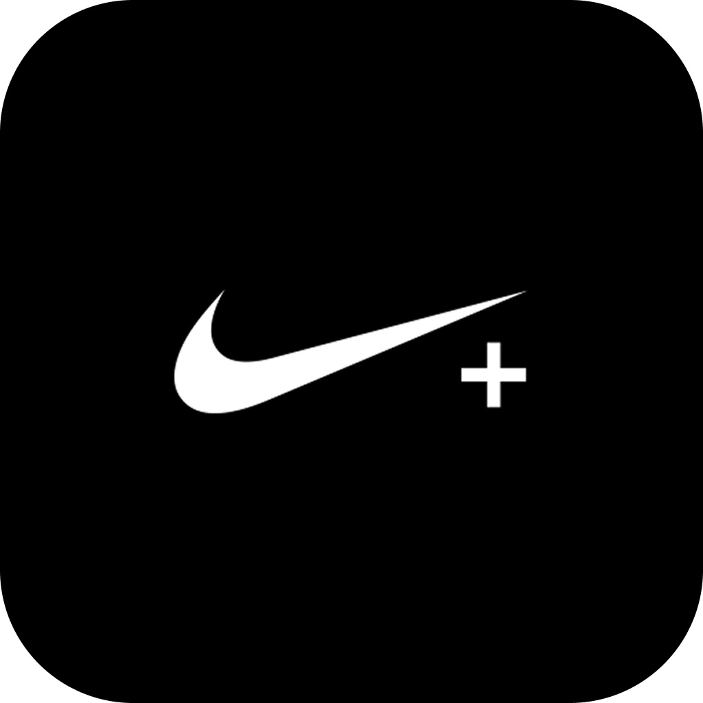
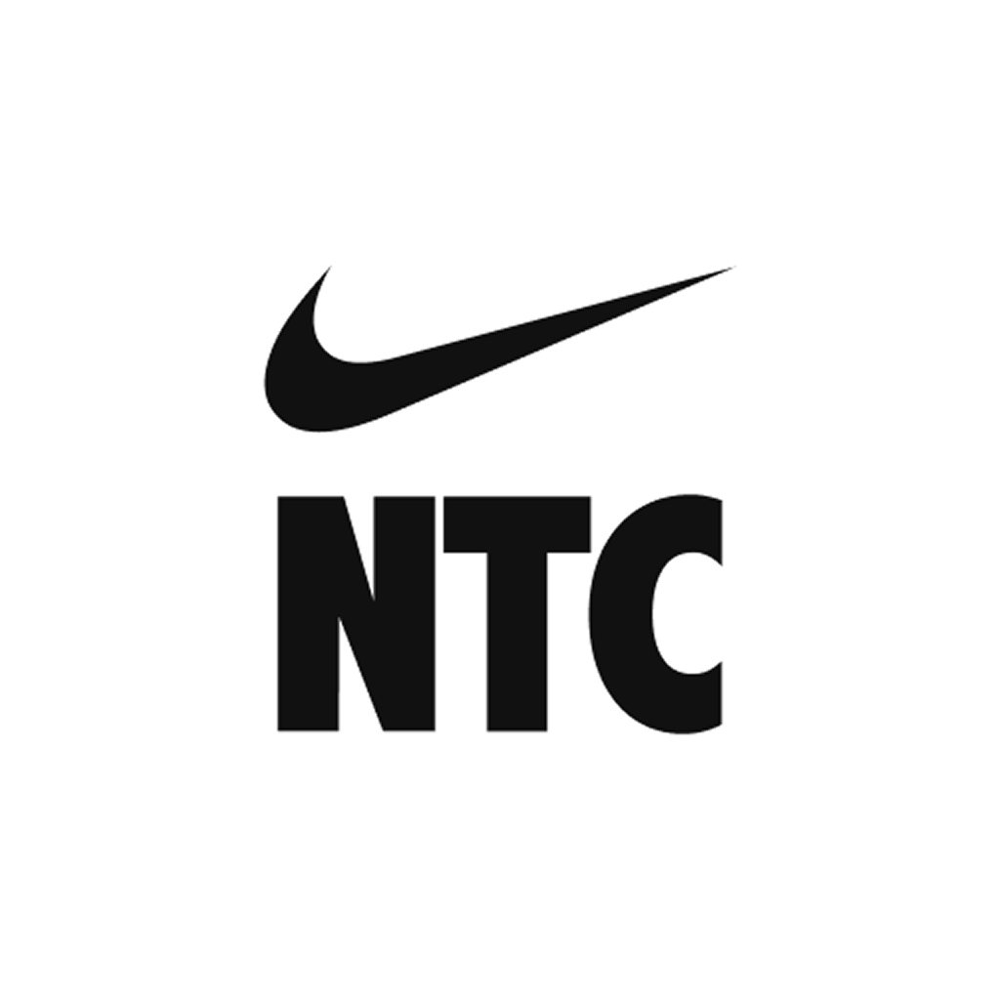
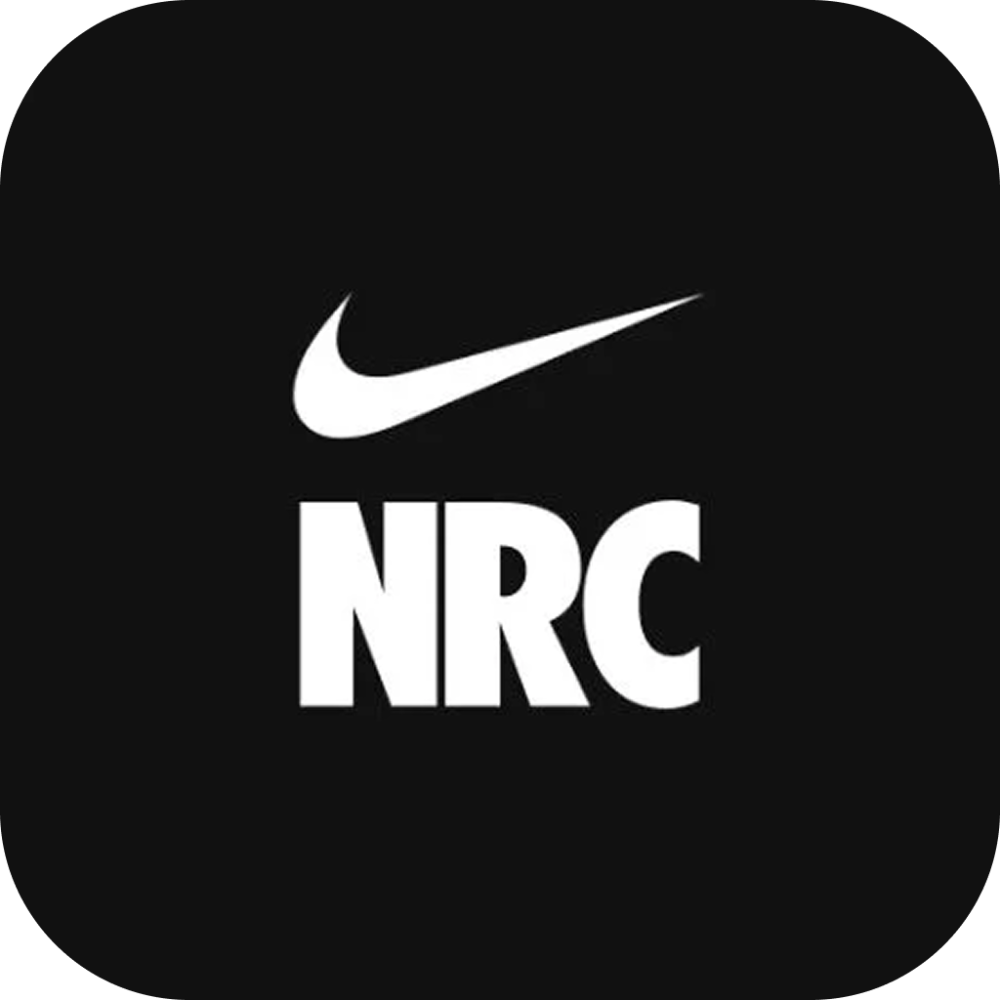
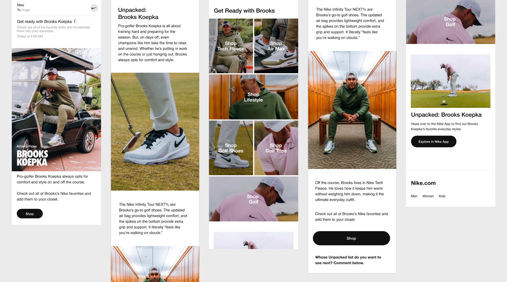

Unpacked • Cross-Channel Commerce System • January 2025
Embedding product discovery into athlete storytelling
Overview
Turning athlete storytelling into a commerce system
When I first came onto Unpacked, my marketing instincts told me this wasn't a one-off. Athlete campaigns don't just launch, they recur, they build, they compound. I actually pitched a system like this to the company around the same time it was being developed. Whether or not that idea found its way in, I approached this from day one as something that needed to scale.
Nike Unpacked is a cross-channel commerce system that integrates athlete storytelling with product discovery, letting fans purchase the exact products athletes use without ever leaving the experience. The goal was simple: embed commerce into the moments that already have people's attention.

The Problem
Engagement without conversion at the point of interest
Athlete-driven launches were generating real engagement. But when a fan wanted to act on that interest, find a product, buy it, they had to leave the experience entirely. That gap killed momentum at exactly the wrong moment.
Behind the scenes, the production problem was just as real. Every launch meant rebuilding assets from scratch across Nike.com, the App, and email. No shared structure, no reuse, no consistency. Each campaign started at zero.

Defining the Opportunity
From one-off campaigns to a scalable cross-channel system
The opportunity wasn't just a better campaign, it was a better system. One where each piece of content leads somewhere intentional, where the consumer is always being guided toward another decision or a deeper point of engagement. I wanted every asset to feel like part of a continuous thread, not a standalone drop.
That meant moving from bespoke layouts to modular structures. Standardizing how assets behave across channels. And embedding product access directly into narrative moments rather than routing fans through separate shopping flows.



Design Direction
Embedding commerce directly into narrative flow
Three principles defined the direction:
Narrative-first commerce: Products appear at key moments within the athlete story, enabling immediate action without breaking the experience. The inspiration and the purchase live in the same breath.
Modular consistency: Asset structures are standardized across platforms so the system can scale across athletes and launches without rebuilding from zero each time.
Signal over saturation: I kept content density low on purpose. The goal was to surface the right product at the right moment, not overwhelm. Less competition between elements means more clarity at the point of decision.

Design Exploration
Structuring high-volume content without losing clarity
Managing a high volume of assets without losing clarity was the core challenge. I restructured layouts to anchor key products within the narrative, and I was deliberate about placement. Certain elements were positioned close to one another so consumers could find small moments of connection and curiosity throughout. It wasn't random. It was a pattern, and it was designed to reward attention.
The polaroid frames were the detail I'm most proud of. The team was already shooting with them on set. I found out they were doing it behind the scenes and thought: we should lean into this. The original frames were plain white, which felt flat and generic. So I tracked down a digitized replica of the exact camera being used on set and brought those polaroids in as they actually were. It turned a decorative element into something authentic, a real artifact from the athlete's world that made the experience feel lived-in rather than produced.


Final Product
A continuous path from content to purchase
Users enter through social, email, or Nike platforms and move into an athlete-led experience where product access is woven into the narrative. At moments of peak engagement, they can purchase featured products directly, no redirects, no lost context. The system behaves consistently across channels, so moving between platforms feels seamless rather than disjointed.

Impact
Scaling production through consistency and reuse
The first campaign took the longest. There were revisions, internal direction shifts, and a steep learning curve. Nike's internal naming conventions alone took real time to absorb. But I put in that work early.
By the last campaign, it was natural. I spoke the language. As soon as assets came in, I could immediately see what image went where. It felt less like production and more like cooking. I knew the recipe, I knew my ingredients, and I could move fast because the thinking was already done.
That's what a system does. It converts early effort into lasting speed.

Reflection
Designing systems, not assets
Looking back, I would have built my global rules earlier. The formula I was working from by the end, the one that made the final campaign feel effortless, I wish I'd had that documented from the start. With the time constraints on a project like this, everything moves fast and the structure you build in your head doesn't always make it onto the page.
Next time, I'd formalize that system for myself before the first asset ships. Not because the work suffered, it didn't, but because those rules would have made the early rounds faster and the handoffs cleaner.